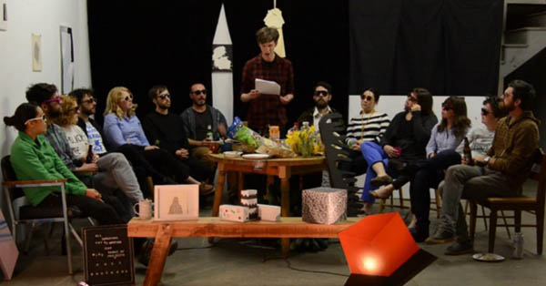

Many Places At Once - Public Programs

Calendar of Events
Saturday, May 3, 2:00 - 6:00 pm
OPEN STUDIOS
At Real Time and Space
125 10th Street, Oakland
Real Time & Space (RTS) is composed of 15 artist studios and an artist residency program located in a former print shop in Oakland’s Chinatown. The mission of RTS is to provide a productive and participatory workspace for its members and residents by fostering opportunities for dialogue, collaboration, and cross-disciplinary interaction. Members include a range of artists, writers, curators, and designers working individually. Numerous public programs, such as artist talks, film screenings, and social events, enhance RTS’s overall mission by supporting opportunities for dialogue and exchange. This exhibition is the first time RTS has presented work as a group, in an exhibition. To overcome the challenge of presenting collectively, when they themselves do not identify as a collective, the members of RTS invited the playwright and former RTS resident Erin Jane Nelson to write and produce a play about the RTS community. The artists served as actors and set designers, using their individual artworks as props for the play. These props are now installed in the Wattis gallery.
For more information about RTS, please visit: www.realtimeandspace.org
Tuesday, May 6, 7:00 - 8:00 pm
TALK: Anthony Huberman (Wattis Institute) with Joel Dean and Jason Benson (Important Projects)
At Real Time and Space
125 10th Street, Oakland
Saturday, May 10, 2:00 - 4:00 pm
STRATEGIES OF SURVIVAL: Discussions on Artists Space in the Bay Area
At CCA Wattis Institute
360 Kansas Street, San Francisco
Being an artist or arts professional in the San Francisco Bay Area isn’t easy. Pressures of local real estate and art markets challenge the possibilities of finding and keeping an affordable space to make artworks. Discussions of eviction, the impact of new technological industries on civic infrastructure, and limited access to space dominate discussions within the arts community. But what are individuals actively doing to face the situation?
Strategies for Survival brings together local artists, arts workers, and attending audiences to present case studies on various tactics implemented by local art practitioners to maintain a creative practice in the San Francisco Bay Area. This event aims to provide opportunities to share experiences, ideas, and questions to further grasp what might be possible in the face of adversity.
Artist and activist Erin McElroy will speak about the status of evictions in San Francisco today, and how her interventionist projects have created an impact across activist platforms.
Dorothy Santos will discuss the relationships between the writer, the artist's practice, and uses of technology. Related to her research in Visual and Critical Studies, she will reflect on her observations of artistic practices that disrupt various types of mainstream media technologies such as radio, augmented and virtual reality spaces.
In 2010, Emma Spertus & Mark Inglis Taylor created Real Time & Space, a communal studio space in Oakland’s Chinatown, as a place for making works and publicly engaging with their community. The pair will discuss the founding and impact resulting from their efforts to establish a physical studio location for more than 20 artists, writers, and curators.
Strategies of Survival will begin with brief 8-minute presentations from the speakers in the back gallery. Following these introductions, audience members will be asked to turn their chairs from the forward facing positions to facing each other in order to encourage a more intimate and equalized discussion.
Thursday, May 15, 5:30 / 6:30 / 7:30 pm
CURATORIAL WALKTHROUGHS
At CCA Wattis Institute
360 Kansas Street, San Francisco
Coinciding with the opening of the MFA Thesis Exhibition at the California College of the Arts, a group of curators from Many Places At Once will lead walkthroughs of the exhibition at 5:30 pm, 6:30 pm, and 7:30 pm.
Tuesday, June 24, 7:00 - 10:00 pm
FILM NIGHT curated by Anastasia Pahules
At Real Time and Space
125 10th Street, Oakland
RTS and the CCA Wattis Institute for Contemporary Arts invite you to an RTS Movie Night in connection with the exhibition Many Places at Once. This RTS Movie Night features the film and video works of Kim Miskowicz. Miskowicz is an Oakland-based artist who works in a variety of media, including paintings and moving images. There will be a solo exhibition of her work coming up in the fall at Krowswork Gallery in Oakland. RTS Movie Nights are curated by Anastasia Pahules.
Saturday, July 12, 6:00 - 8:00 pm >> Closing event
POTLUCK: Portrait of the Artist as a Young Casserole
At CCA Wattis Institute
360 Kansas Street, San Francisco
To celebrate the closing of the exhibition, RTS in collaboration with the curators of Many Places At Once invite you to a rather unconventional potluck.
Please bring a dish that you interpret as a self portrait and get ready for a balloon drop.